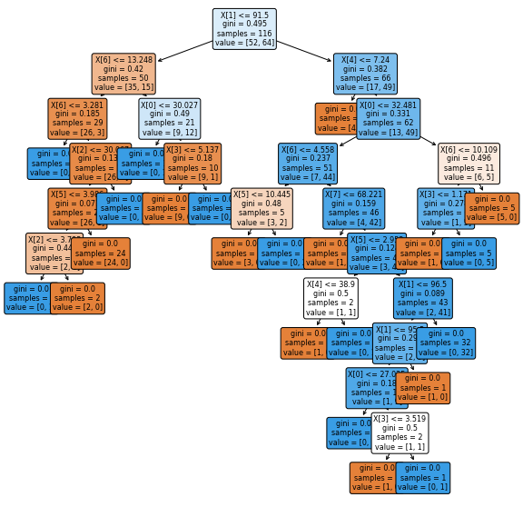

UTS (Penambangan Data B)
Contents
UTS (Penambangan Data B)#
Metode KNN#
import pandas as pd
import numpy as np
dataset_url="https://raw.githubusercontent.com/Ais-122/datamining/gh-pages/dataR2.csv"
data=pd.read_csv(dataset_url, index_col=0)
HTTPErrorTraceback (most recent call last)
<ipython-input-2-cb0d479f753c> in <module>
1 dataset_url="https://raw.githubusercontent.com/Ais-122/datamining/gh-pages/dataR2.csv"
----> 2 data=pd.read_csv(dataset_url, index_col=0)
/usr/local/lib/python3.7/dist-packages/pandas/util/_decorators.py in wrapper(*args, **kwargs)
309 stacklevel=stacklevel,
310 )
--> 311 return func(*args, **kwargs)
312
313 return wrapper
/usr/local/lib/python3.7/dist-packages/pandas/io/parsers/readers.py in read_csv(filepath_or_buffer, sep, delimiter, header, names, index_col, usecols, squeeze, prefix, mangle_dupe_cols, dtype, engine, converters, true_values, false_values, skipinitialspace, skiprows, skipfooter, nrows, na_values, keep_default_na, na_filter, verbose, skip_blank_lines, parse_dates, infer_datetime_format, keep_date_col, date_parser, dayfirst, cache_dates, iterator, chunksize, compression, thousands, decimal, lineterminator, quotechar, quoting, doublequote, escapechar, comment, encoding, encoding_errors, dialect, error_bad_lines, warn_bad_lines, on_bad_lines, delim_whitespace, low_memory, memory_map, float_precision, storage_options)
584 kwds.update(kwds_defaults)
585
--> 586 return _read(filepath_or_buffer, kwds)
587
588
/usr/local/lib/python3.7/dist-packages/pandas/io/parsers/readers.py in _read(filepath_or_buffer, kwds)
480
481 # Create the parser.
--> 482 parser = TextFileReader(filepath_or_buffer, **kwds)
483
484 if chunksize or iterator:
/usr/local/lib/python3.7/dist-packages/pandas/io/parsers/readers.py in __init__(self, f, engine, **kwds)
809 self.options["has_index_names"] = kwds["has_index_names"]
810
--> 811 self._engine = self._make_engine(self.engine)
812
813 def close(self):
/usr/local/lib/python3.7/dist-packages/pandas/io/parsers/readers.py in _make_engine(self, engine)
1038 )
1039 # error: Too many arguments for "ParserBase"
-> 1040 return mapping[engine](self.f, **self.options) # type: ignore[call-arg]
1041
1042 def _failover_to_python(self):
/usr/local/lib/python3.7/dist-packages/pandas/io/parsers/c_parser_wrapper.py in __init__(self, src, **kwds)
49
50 # open handles
---> 51 self._open_handles(src, kwds)
52 assert self.handles is not None
53
/usr/local/lib/python3.7/dist-packages/pandas/io/parsers/base_parser.py in _open_handles(self, src, kwds)
227 memory_map=kwds.get("memory_map", False),
228 storage_options=kwds.get("storage_options", None),
--> 229 errors=kwds.get("encoding_errors", "strict"),
230 )
231
/usr/local/lib/python3.7/dist-packages/pandas/io/common.py in get_handle(path_or_buf, mode, encoding, compression, memory_map, is_text, errors, storage_options)
612 compression=compression,
613 mode=mode,
--> 614 storage_options=storage_options,
615 )
616
/usr/local/lib/python3.7/dist-packages/pandas/io/common.py in _get_filepath_or_buffer(filepath_or_buffer, encoding, compression, mode, storage_options)
310 # assuming storage_options is to be interpreted as headers
311 req_info = urllib.request.Request(filepath_or_buffer, headers=storage_options)
--> 312 with urlopen(req_info) as req:
313 content_encoding = req.headers.get("Content-Encoding", None)
314 if content_encoding == "gzip":
/usr/local/lib/python3.7/dist-packages/pandas/io/common.py in urlopen(*args, **kwargs)
210 import urllib.request
211
--> 212 return urllib.request.urlopen(*args, **kwargs)
213
214
/usr/lib/python3.7/urllib/request.py in urlopen(url, data, timeout, cafile, capath, cadefault, context)
220 else:
221 opener = _opener
--> 222 return opener.open(url, data, timeout)
223
224 def install_opener(opener):
/usr/lib/python3.7/urllib/request.py in open(self, fullurl, data, timeout)
529 for processor in self.process_response.get(protocol, []):
530 meth = getattr(processor, meth_name)
--> 531 response = meth(req, response)
532
533 return response
/usr/lib/python3.7/urllib/request.py in http_response(self, request, response)
639 if not (200 <= code < 300):
640 response = self.parent.error(
--> 641 'http', request, response, code, msg, hdrs)
642
643 return response
/usr/lib/python3.7/urllib/request.py in error(self, proto, *args)
567 if http_err:
568 args = (dict, 'default', 'http_error_default') + orig_args
--> 569 return self._call_chain(*args)
570
571 # XXX probably also want an abstract factory that knows when it makes
/usr/lib/python3.7/urllib/request.py in _call_chain(self, chain, kind, meth_name, *args)
501 for handler in handlers:
502 func = getattr(handler, meth_name)
--> 503 result = func(*args)
504 if result is not None:
505 return result
/usr/lib/python3.7/urllib/request.py in http_error_default(self, req, fp, code, msg, hdrs)
647 class HTTPDefaultErrorHandler(BaseHandler):
648 def http_error_default(self, req, fp, code, msg, hdrs):
--> 649 raise HTTPError(req.full_url, code, msg, hdrs, fp)
650
651 class HTTPRedirectHandler(BaseHandler):
HTTPError: HTTP Error 404: Not Found
data
| BMI | Glucose | Insulin | HOMA | Leptin | Adiponectin | Resistin | MCP.1 | Classification | |
|---|---|---|---|---|---|---|---|---|---|
| Age | |||||||||
| 48 | 23.500000 | 70 | 2.707 | 0.467409 | 8.8071 | 9.702400 | 7.99585 | 417.114 | 1 |
| 83 | 20.690495 | 92 | 3.115 | 0.706897 | 8.8438 | 5.429285 | 4.06405 | 468.786 | 1 |
| 82 | 23.124670 | 91 | 4.498 | 1.009651 | 17.9393 | 22.432040 | 9.27715 | 554.697 | 1 |
| 68 | 21.367521 | 77 | 3.226 | 0.612725 | 9.8827 | 7.169560 | 12.76600 | 928.220 | 1 |
| 86 | 21.111111 | 92 | 3.549 | 0.805386 | 6.6994 | 4.819240 | 10.57635 | 773.920 | 1 |
| ... | ... | ... | ... | ... | ... | ... | ... | ... | ... |
| 45 | 26.850000 | 92 | 3.330 | 0.755688 | 54.6800 | 12.100000 | 10.96000 | 268.230 | 2 |
| 62 | 26.840000 | 100 | 4.530 | 1.117400 | 12.4500 | 21.420000 | 7.32000 | 330.160 | 2 |
| 65 | 32.050000 | 97 | 5.730 | 1.370998 | 61.4800 | 22.540000 | 10.33000 | 314.050 | 2 |
| 72 | 25.590000 | 82 | 2.820 | 0.570392 | 24.9600 | 33.750000 | 3.27000 | 392.460 | 2 |
| 86 | 27.180000 | 138 | 19.910 | 6.777364 | 90.2800 | 14.110000 | 4.35000 | 90.090 | 2 |
116 rows × 9 columns
#Melakukan cek banyaknya baris dan kolom pada data
data.shape
(116, 9)
#membuat dataframe dengan mengecualikan kolom target
X = data.drop(columns=['Classification'])
#melakukan cek dengan menampilkan data
X.head()
| BMI | Glucose | Insulin | HOMA | Leptin | Adiponectin | Resistin | MCP.1 | |
|---|---|---|---|---|---|---|---|---|
| Age | ||||||||
| 48 | 23.500000 | 70 | 2.707 | 0.467409 | 8.8071 | 9.702400 | 7.99585 | 417.114 |
| 83 | 20.690495 | 92 | 3.115 | 0.706897 | 8.8438 | 5.429285 | 4.06405 | 468.786 |
| 82 | 23.124670 | 91 | 4.498 | 1.009651 | 17.9393 | 22.432040 | 9.27715 | 554.697 |
| 68 | 21.367521 | 77 | 3.226 | 0.612725 | 9.8827 | 7.169560 | 12.76600 | 928.220 |
| 86 | 21.111111 | 92 | 3.549 | 0.805386 | 6.6994 | 4.819240 | 10.57635 | 773.920 |
#Target values
y = data['Classification'].values
#menampilkan target values
y[0:5]
array([1, 1, 1, 1, 1])
from sklearn.model_selection import train_test_split
#memisahkan dataset ke train and test data
X_train, X_test, y_train, y_test = train_test_split(X, y, test_size=0.2, random_state=1, stratify=y)
from sklearn.neighbors import KNeighborsClassifier
# Membuat KNN classifier
knn = KNeighborsClassifier(n_neighbors = 3)
# Menyesuaikan kelas dengan data
knn.fit(X_train,y_train)
KNeighborsClassifier(n_neighbors=3)
#Menampilkan 5 data prediksi
knn.predict(X_test)[0:5]
array([1, 2, 1, 2, 1])
#Cek akurasi tes data
knn.score(X_test, y_test)
0.4166666666666667
from sklearn.model_selection import cross_val_score
import numpy as np
#Membuat KNN model baru
knn_cv = KNeighborsClassifier(n_neighbors=3)
#mencoba model dengan cv = 5
cv_scores = cross_val_score(knn_cv, X, y, cv=5)
#print cv score
print(cv_scores)
[0.33333333 0.47826087 0.52173913 0.47826087 0.47826087]
print("cv_scores mean:{}".format(np.mean(cv_scores)))
cv_scores mean:0.4579710144927536
from sklearn.model_selection import GridSearchCV
#membuat KNN Model baru
knn2 = KNeighborsClassifier()
#membuat dictionary dari semua values yang akan dilakukan tes pada n_neighbors
param_grid = {"n_neighbors": np.arange(1, 25)}
#menggunakan gridsearch untuk melakukan tes values pada n_neighbors
knn_gscv = GridSearchCV(knn2, param_grid, cv=5)
#menyesuaikan model pada data
knn_gscv.fit(X, y)
GridSearchCV(cv=5, estimator=KNeighborsClassifier(),
param_grid={'n_neighbors': array([ 1, 2, 3, 4, 5, 6, 7, 8, 9, 10, 11, 12, 13, 14, 15, 16, 17,
18, 19, 20, 21, 22, 23, 24])})
#melakukan cek performa n_neighbors value
knn_gscv.best_params_
{'n_neighbors': 14}
#cek mean score dari top performing value pada n_neighbors
knn_gscv.best_score_
0.5695652173913043
# menghitung error pada K values antara 2 dan 10
error = []
import matplotlib.pyplot as plt
for i in range(1, 10):
knn = KNeighborsClassifier(n_neighbors=i)
knn.fit(X_train, y_train)
pred_i = knn.predict(X_test)
error.append(np.mean(pred_i != y_test))
plt.figure(figsize=(12, 6))
plt.plot(range(1, 10), error, color='red', linestyle='dashed', marker='o',
markerfacecolor='blue', markersize=10)
plt.title('Error Rate K Value')
plt.xlabel('K Value')
plt.ylabel('Mean Error')
Text(0, 0.5, 'Mean Error')
Metode Decision Tree#
import numpy as np # linear algebra
import pandas as pd # data processing, CSV file I/O (e.g. pd.read_csv)
import matplotlib.pyplot as plt
from sklearn.metrics import accuracy_score
from sklearn import tree
import seaborn as sns
%matplotlib inline
import warnings
warnings.filterwarnings('ignore')
dataset_url="https://raw.githubusercontent.com/Ais-122/datamining/gh-pages/dataR2.csv"
df = pd.read_csv(dataset_url, index_col=0)
# preview dari dataset
df.head()
| BMI | Glucose | Insulin | HOMA | Leptin | Adiponectin | Resistin | MCP.1 | Classification | |
|---|---|---|---|---|---|---|---|---|---|
| Age | |||||||||
| 48 | 23.500000 | 70 | 2.707 | 0.467409 | 8.8071 | 9.702400 | 7.99585 | 417.114 | 1 |
| 83 | 20.690495 | 92 | 3.115 | 0.706897 | 8.8438 | 5.429285 | 4.06405 | 468.786 | 1 |
| 82 | 23.124670 | 91 | 4.498 | 1.009651 | 17.9393 | 22.432040 | 9.27715 | 554.697 | 1 |
| 68 | 21.367521 | 77 | 3.226 | 0.612725 | 9.8827 | 7.169560 | 12.76600 | 928.220 | 1 |
| 86 | 21.111111 | 92 | 3.549 | 0.805386 | 6.6994 | 4.819240 | 10.57635 | 773.920 | 1 |
df.info()
<class 'pandas.core.frame.DataFrame'>
Int64Index: 116 entries, 48 to 86
Data columns (total 9 columns):
# Column Non-Null Count Dtype
--- ------ -------------- -----
0 BMI 116 non-null float64
1 Glucose 116 non-null int64
2 Insulin 116 non-null float64
3 HOMA 116 non-null float64
4 Leptin 116 non-null float64
5 Adiponectin 116 non-null float64
6 Resistin 116 non-null float64
7 MCP.1 116 non-null float64
8 Classification 116 non-null int64
dtypes: float64(7), int64(2)
memory usage: 9.1 KB
col_names = ['BMI', 'Glucose', 'Insulin', 'HOMA', 'Leptin', 'Adiponectin', 'Resistin', 'MCP.1', 'Classification']
for col in col_names:
print(df[col].value_counts())
21.367521 2
32.461911 2
27.688778 2
31.975015 2
31.250000 2
..
29.606767 1
34.422174 1
35.855815 1
36.790166 1
27.180000 1
Name: BMI, Length: 110, dtype: int64
92 9
90 6
87 4
77 4
103 4
97 4
83 4
82 4
101 4
86 4
85 4
93 3
102 3
89 3
98 3
84 3
95 3
100 3
88 3
94 3
105 2
99 2
112 2
134 2
131 2
70 2
78 2
106 2
196 1
119 1
152 1
108 1
104 1
91 1
118 1
128 1
139 1
199 1
76 1
60 1
75 1
201 1
114 1
116 1
80 1
79 1
74 1
110 1
96 1
138 1
Name: Glucose, dtype: int64
18.077 2
3.226 2
4.530 2
2.707 1
4.172 1
..
5.646 1
4.181 1
5.819 1
3.855 1
19.910 1
Name: Insulin, Length: 113, dtype: int64
0.467409 1
1.144780 1
3.071407 1
1.008511 1
2.871792 1
..
0.732193 1
5.091856 1
1.840410 1
2.534932 1
6.777364 1
Name: HOMA, Length: 116, dtype: int64
8.8071 1
21.7800 1
26.5166 1
12.2617 1
19.0653 1
..
20.0920 1
31.2128 1
68.5102 1
27.1841 1
90.2800 1
Name: Leptin, Length: 116, dtype: int64
2.194280 2
9.702400 1
9.760000 1
7.282870 1
6.695585 1
..
3.192090 1
8.300955 1
4.794200 1
20.030000 1
14.110000 1
Name: Adiponectin, Length: 115, dtype: int64
7.99585 1
4.82000 1
19.46324 1
53.67170 1
42.74470 1
..
10.37518 1
6.71026 1
21.44366 1
10.26309 1
4.35000 1
Name: Resistin, Length: 116, dtype: int64
1698.440 4
417.114 1
448.799 1
799.898 1
738.034 1
..
473.859 1
960.246 1
358.624 1
695.754 1
90.090 1
Name: MCP.1, Length: 113, dtype: int64
2 64
1 52
Name: Classification, dtype: int64
df['Classification'].value_counts()
2 64
1 52
Name: Classification, dtype: int64
# melakukan cek apabila terdapat missing values pada variabel
df.isnull().sum()
BMI 0
Glucose 0
Insulin 0
HOMA 0
Leptin 0
Adiponectin 0
Resistin 0
MCP.1 0
Classification 0
dtype: int64
#mendeklarasikan fitur vector dan target variabel
X = df.drop(['Classification'], axis=1)
y = df['Classification']
# split X and y into training and testing sets
from sklearn.model_selection import train_test_split
X_train, X_test, y_train, y_test = train_test_split(X, y, test_size = 0.33, random_state = 42)
# check the shape of X_train and X_test
X_train.shape, X_test.shape
((77, 8), (39, 8))
# melakukan cek tipe data pada X_train
X_train.dtypes
BMI float64
Glucose int64
Insulin float64
HOMA float64
Leptin float64
Adiponectin float64
Resistin float64
MCP.1 float64
dtype: object
# import DecisionTreeClassifier
from sklearn.tree import DecisionTreeClassifier
# instantiate the DecisionTreeClassifier model with criterion gini index
clf_gini = DecisionTreeClassifier(criterion='gini', max_depth=3, random_state=0)
# fit the model
clf_gini.fit(X_train, y_train)
DecisionTreeClassifier(max_depth=3, random_state=0)
# print the scores on training and test set
print('Training set score: {:.4f}'.format(clf_en.score(X_train, y_train)))
print('Test set score: {:.4f}'.format(clf_en.score(X_test, y_test)))
Training set score: 0.8182
Test set score: 0.6923
y = df["Classification"]
X = df.drop(columns=["Classification"])
clf = tree.DecisionTreeClassifier(criterion="gini")
clf = clf.fit(X, y)
#plt the figure, setting a black background
plt.figure(figsize=(10,10))
#create the tree plot
a = tree.plot_tree(clf,
rounded = True,
filled = True,
fontsize=8)
#show the plot
plt.show()
